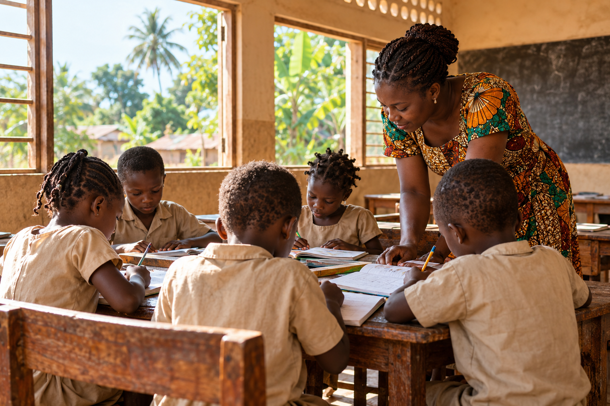

Orphelinat · École · Accompagnement
Chaque enfant mérite un avenir qu’il peut choisir.
À Klouékanmè, l’ONG Arbre de Vie des Enfants protège, scolarise et accompagne les orphelins et enfants vulnérables du Couffo.
Association reconnueAction locale depuis 2016Éducation inclusive

Qui sommes-nous ?
Une organisation locale engagée pour l’enfance.
Créée le 2 avril 2016, OAVE agit auprès des enfants orphelins, vulnérables, déscolarisés ou laissés pour compte.
Notre approche associe protection, éducation, pédagogie inclusive et préparation à l’autonomie. Nous avançons avec les familles, les enseignants, les bénévoles et les partenaires du territoire.
AGRÉMENTN° 3/021/PDM-C/SG/STCCD/
JOURNAL OFFICIEL127e année · N°15 · 1er août 2016
Nos domaines d’action
Agir sur tout ce qui permet à un enfant de grandir.
Un accompagnement continu, de la sécurité quotidienne jusqu’à la construction d’un projet d’avenir.
Protection de l’enfance
Un cadre stable, une écoute attentive et une prise en charge digne pour les enfants fragilisés.
Soutenir cette actionÉducation & inclusion
Une école primaire, du soutien scolaire et des méthodes adaptées aux besoins de chaque enfant.
Découvrir l’écoleAutonomie & insertion
Des activités artistiques, sportives, professionnelles et agricoles pour développer les compétences.
Voir les projetsNotre école primaire
Apprendre aujourd’hui, devenir autonome demain.
Depuis 2018, l’école OAVE accueille les élèves dans six classes, du CI au CM2, avec un bureau, un magasin et une bibliothèque.
ODD 1 — Pas de pauvretéODD 4 — Éducation de qualité
- CIInitiation
- CPFondamentaux
- CE1Consolidation
- CE2Progression
- CM1Autonomie
- CM2Préparation
Priorités actuelles
Des projets concrets qui attendent des partenaires.
Les besoins ont été identifiés par l’organisation au plus près du terrain.
Améliorer les infrastructures
Buanderie, bloc administratif et bloc sanitaire moderne.
Sécuriser le site
Achever la clôture de l’orphelinat.
Former à un métier
Créer un centre professionnel et artistique.
Équiper la bibliothèque
Livres, mobilier et outils pédagogiques.
Développer l’agriculture
Financer une activité agricole durable.
Besoins immédiats
Un don matériel améliore le quotidien dès maintenant.
- Denrées alimentaires, vêtements et ustensiles
- Fournitures scolaires pour élèves et enseignants
- Jeux de cour, balançoire, toboggan et baby-foot
Bénévolat & stage
Mettre ses compétences au service des enfants.
08h–12h15h–17hDu lundi au vendredi
OAVE accueille les personnes-ressources en éducation ou pédagogie inclusive, capables de s’adapter au milieu rural.
- Accompagnement individuel et soutien scolaire
- Projets éducatifs, artistiques, sportifs ou agricoles
- Formation des enseignants à la pédagogie inclusive
Transparence & références
Une organisation ancrée dans son territoire.
Agir avec nous
Ensemble, donnons plus de choix à chaque enfant.
Parlez-nous de votre projet de don, de partenariat ou de bénévolat. L’équipe vous répond directement.
WhatsApp+229 01 97 46 12 66E-mailorphelinarbre@gmail.comMaison DAGBE · Hameau Azonhoubohoué
Davitohoué, Klouékanmè · BP 30 · Bénin
Davitohoué, Klouékanmè · BP 30 · Bénin